Do disaggregated electricity bills really help people to save energy?
Jack Kelly
jack.kelly@imperial.ac.uk
Outline
- Introduction to energy disaggregation
- Introduction to systematic reviews
- Methodology
- The studies
- Findings
- Gaps in our knowledge: Suggestions for future research
- Conclusions
Energy Disaggregation
Aggregate Energy Bill
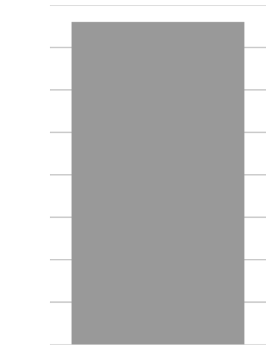Itemised Energy Bill
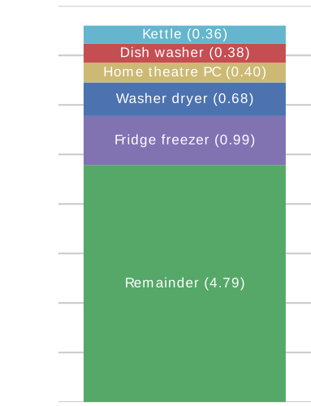The many names of 'energy disaggregation'
- NILM: Non-Intrusive Load Monitoring
- NALM: Non-intrusive Appliance Load Monitoring
- NIALM: Non-Intrusive Appliance Load Monitoring
The Energy Disaggregation community

Bidgely raised $16.6 million in 2015
Why bother with disaggregation?
GB Smart Meter Roll-out
- All homes to have a smart meter by 2020.
- These reports whole-house power demand every 10 seconds to home area network (HAN).
- DECC's business case assumes that smart meters will drive savings of £4.6 billion due to reduced energy consumption (across both electricity and gas).
Use-cases for energy disaggregation
- Many use-cases
- This talk is about one use-case:
- Can disaggregated energy feedback help people to reduce energy consumption more effectively than aggregate energy data alone?
How might disaggregated data reduce energy demand?
1977: the Twin Rivers program
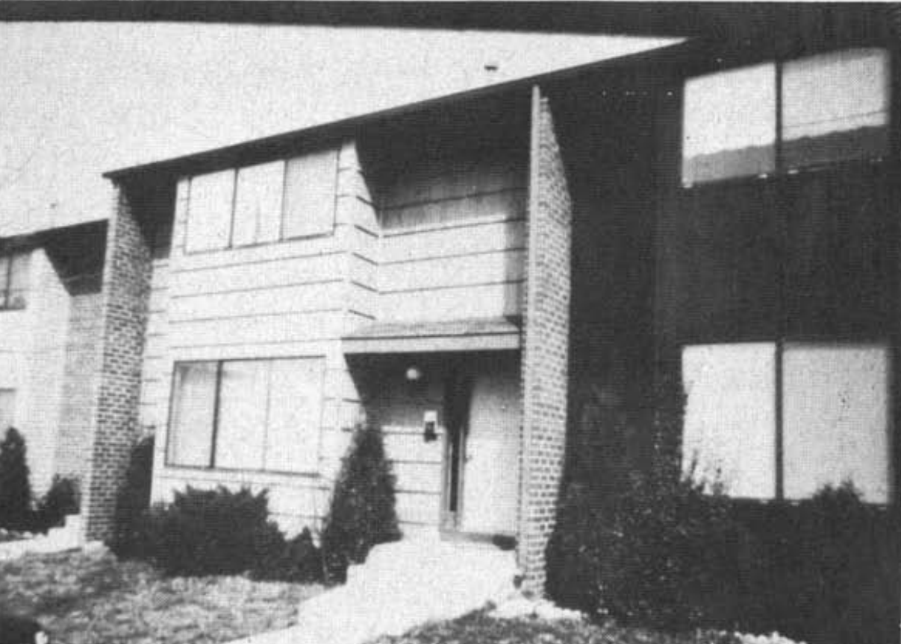Socolow, The twin rivers program on energy
conservation in housing: Highlights and conclusions,
Energy
and Buildings, 1977
2:1 range in energy consumption between identical houses
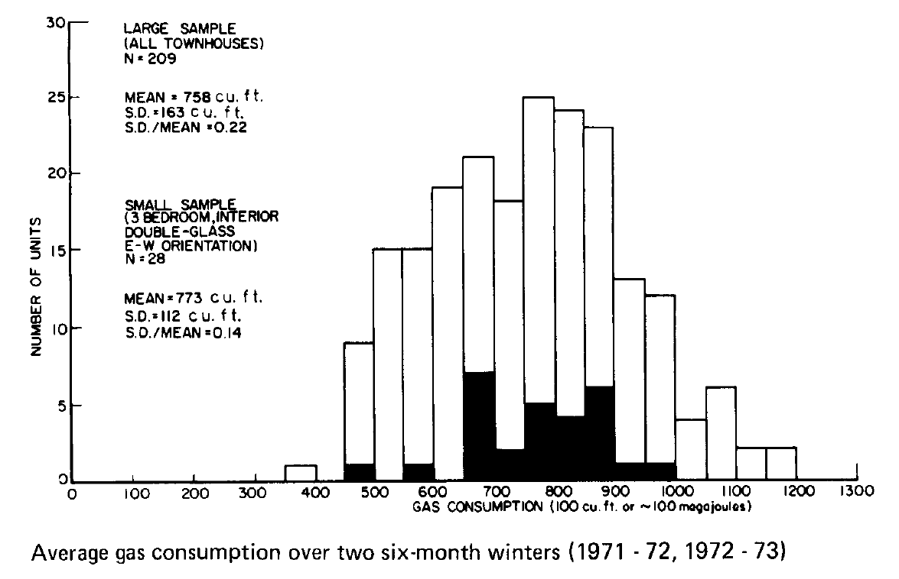Socolow, The twin rivers program on energy
conservation in housing: Highlights and conclusions,
Energy
and Buildings, 1977
"Information deficit"
and
"rational resource managers"
People self-report that they want disaggregated energy data
But do people save energy when given disaggregated data?
Why reduce energy consumption?
2015 Paris agreement on Climate Change
"[Hold] the increase in the global average [surface] temperature to well below 2 °C above pre-industrial levels and to pursue efforts to limit the temperature increase to 1.5 °C above pre-industrial levels"
Background image from The Guardian/Francois Guillot/AFP/Getty Images
Background image from phys.org/Gregory Heath/CSIRO
Fossil-fuel emissions estimated to be compatible with 2 °C (RCP2.6)
Gasser et al., Negative emissions physically needed to keep global warming below 2 °C, Nature Communications, 2015
Background image from phys.org/Gregory Heath/CSIRO
Past and future changes in CO2 and mean temperature
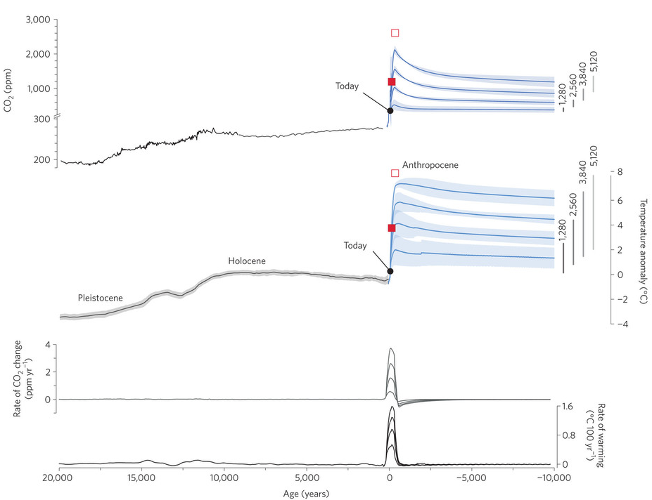
Clark et al., Consequences of
twenty-first-century policy for multi-millennial climate and
sea-level change,
Nature Climate Change,
2016
Past and future changes in global mean sea level

Clark et al., Consequences of
twenty-first-century policy for multi-millennial climate and
sea-level change,
Nature Climate Change,
2016
My Work
The Computer Science of disaggregation
Recurrent Neural Nets
"NILM
IS
DEAD"
Systematic reviews
- Common in medicine, social sciences etc.
- Aim to collect all papers matching a defined search criteria
- Quantitative summary of each paper and biases
- Quantitative synthesis of all results
- May include a "meta-analysis"
- Distinct from "narrative" reviews
Background image from UCSF
{kind=link}
Methodology
Research questions
- Can disaggregated energy data help an already-motivated sub-group of the general population (‘energy enthusiasts’) to save energy?
- How much energy would the general population save if given disaggregated data?
- Is fine-grained disaggregation required?
- For the general population, does disaggregated energy feedback enable greater savings than aggregate data?
Literature search
- Three search engines: Google Scholar, the ACM Digital Library and IEEE Xplore
- Search terms:
- ‘disaggregated AND [energy|electricity] AND feedback’
- ‘N[I|A|IA]LM AND feedback’
- Searched papers' bibliographies
- Send draft literature review to authors for comments
The studies
12 groups of studies identified
Findings
- Mean energy reduction = 4%
- Weighted by number of participants
- Full meta-analysis probably not possible
Biases
Opt-in bias
- All 12 studies suffer from 'opt-in' bias
- Subjects self-selected to some extent
- Subjects probably more interested in energy than the average person
- Very likely to be a strong positive bias
The Hawthorne Effect
- 8 studies did not control for Hawthorne
- Hawthorne effect is illustrated by
Schwartz et al. 2013:
- Randomised controlled trial
- 6,350 participants split into 2 groups: control & treatment
- Treatment received weekly postcard saying: "You have been selected to be part of a one-month study of how much electricity you use in your home... No action is needed on your part. We will send you a weekly reminder postcard about the study..."
- Treatment group reduced energy consumption by 2.7%!
- Failure to control for Hawthorne very likely to be strong positive bias
Other biases
- 6 studies used attention-grabbing displays
- Home-visits
- 10 studies were short (4 months or less)
- Cherry-picking statistical analyses and comparison periods?
- 8 studies used sub-metered data, hence avoiding mistrust from participants
- Publication bias?
Can disaggregated electricity feedback enable "energy enthusiasts" to save energy?
- Very likely. For example...
Home Energy Analytics (HEA) studies
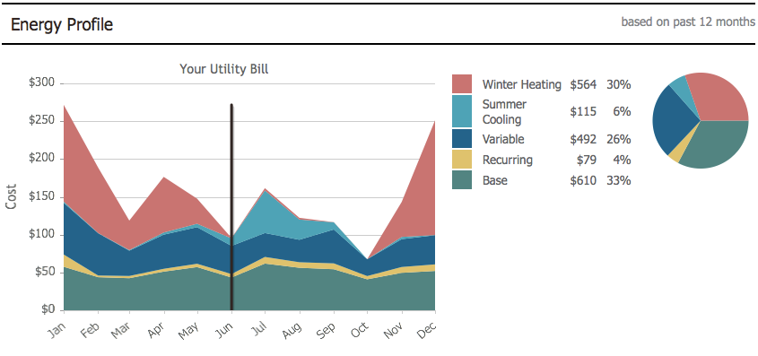- 1,623 users
- Up to 44 months
- Average reduction of 6.1%
- Top quartile (310 "super-enthusiasts") reduced by 14.5%
2014 PG&E study
- 1,685 users: half got IHD; half got Bidgely
- 3 months
- No significant reduction across all 1,685 users
- But users who selected a time-of-use tariff saved 7.7% (142 IHD; 136 Bidgely)
How much energy would the whole population save?
- No "perfect" correction for opt-in bias
- Consider study in Sweden (Vassileva
et al. 2012):
- 2,000 households given access to website analysing their aggregate energy demand
- Only 32% accessed the website. They saved 15%.
- Those who did not access website did not reduce energy.
- Average saving = 32% x 15% = 5%
How much energy would the whole population save?
- Average opt-in rate = 16%
- Average saving across population = 16% x 4% = 0.6%
Is "fine-grained" disaggregation necessary?
Is "fine-grained" disaggregation necessary?
Home Energy Analytics (HEA) studies
- Average reduction of 6.1%
- Coarse-grained disaggregation may be sufficient
- But no studies directly compared fine-grained against coarse-grained.
Aggregate versus disaggregated feedback
- 4 of the 12 studies directly
compared disaggregated against aggregate feedback
- 3 studies found aggregate to be more effective
- 1 study found aggregate to be equally effective
- 2 field trials & 2 lab experiments
The 2 field trials...
Sokoloski 2015
- Randomised controlled trial
- 70 households recruited in California
- Disag group (n=12)
- IHD group (n=34)
- No-contact control (n=24)
- 3 weeks
- Becky Sokoloski, Disaggregated Electricity Consumption: Using Appliance-Specific Feedback to Promote Energy Conservation, M.A. thesis in Psychology, California State University San Marcos, 2015
Sokoloski's results
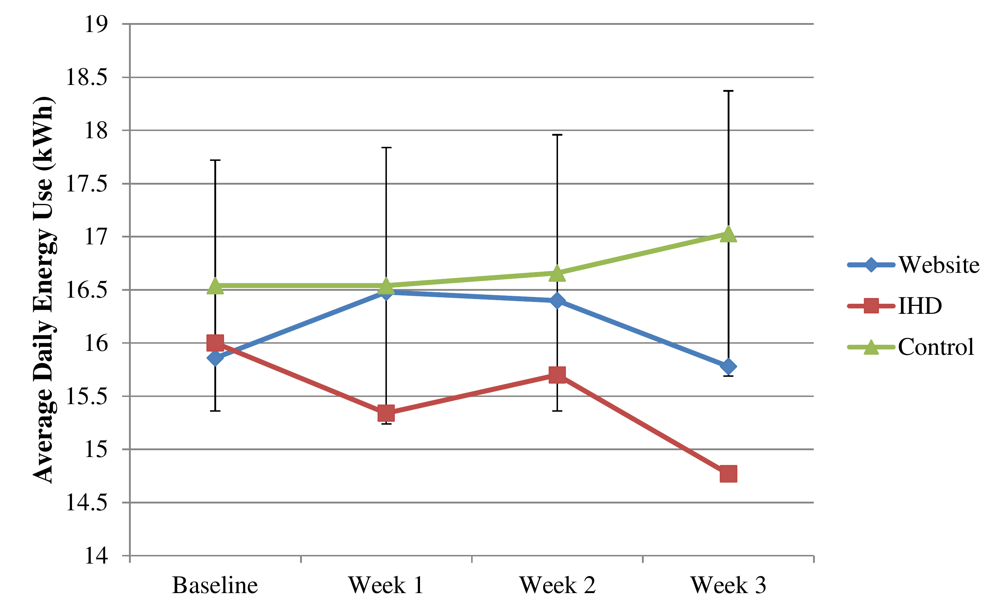Sokoloski's results
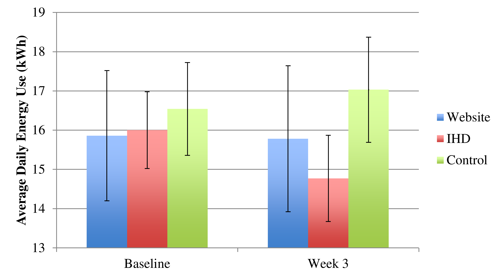Sokoloski's results
Energy reductions:
- IHD: 8.1% (statistically significant)
- Disaggregation: 0.5%
- Control: -2.5%
Sokoloski's results
Findings from surveys:
- Follow-up survey revealed that the disag group were not significantly more likely to be willing to replace large, inefficient appliances compared to controls or IHD group.
- Neither controls nor the disag group significantly increased their perception of control (initial survey versus follow-up).
- IHD group did increase their perception of control.
Sokoloski's results
Findings from surveys:
- Users viewed their devices:
- 0.86 times per day for disag users
- 8.16 times per day for IHD users
- Returning devices:
- 2 of 7 (29%) wanted to return disag device
- 2 of 30 (7%) wanted to return IHD
PG&E 2014 trial
- 1,685 PG&E customers
- 1,001 from SmartRate & 584 from time-of-use users
- additional no-contact controls
- Half got IHD & half got Bidgely
- 3 months
- Users choose intervention
- Did not tease apart consumption of IHD vs Bidgely
- Churchwell et al., HAN Phase 3 Impact and Process Evaluation Report, technical report by Nexant, 2014
PG&E 2014 trial results
- No significant energy reduction across all 1,001 SmartRate users or 208 EV TOU users
- 7.7% energy reduction for time-of-use users (142 IHD & 136 Bidgely users)
- IHD users significantly more likely to report taking actions to reduce electricity usage and to use their device to deduce power demand of individual appliances(!)
PG&E 2014 trial results
- Most common complaints from Bidgely users was about the disag feature. Several users did not trust the disag data; or were unsure whether users should assist the algorithm by turning loads on or off; or thought categories were too few or too broad; or didn't like that they couldn't add new disag categories.
- IHD more successful in communicating power demand right now
PG&E 2014 trial results
Frequency of viewing devices
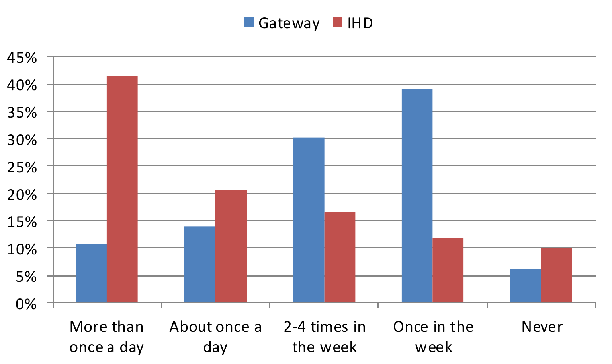PG&E 2014 trial results
Percentage of customers saying they saved energy
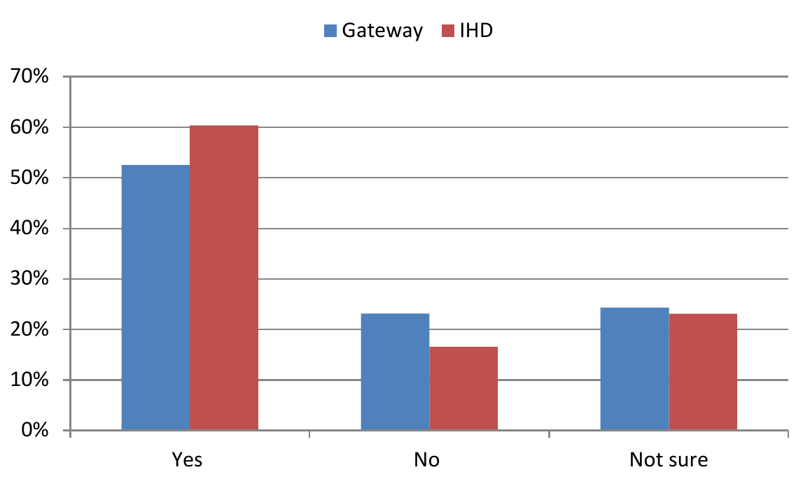PG&E 2014 trial results
Reported actions taken in response to feedback
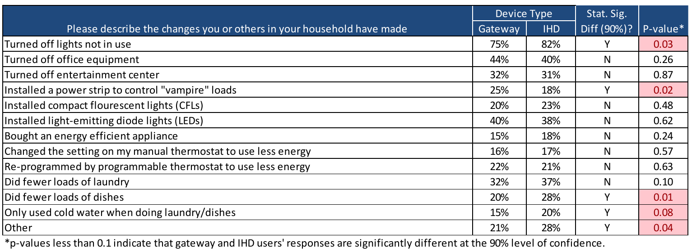Bidgely have redesigned their website since these studies
Suggestions for future studies
- Compare aggregate versus disagg (both on an IHD)
- Compare 2 groups:
- Aggregate on an IHD
- Aggregate (on an IHD) + disagg (on a website)
- Compare fine-grained disag versus coarse-grained disag
Conclusions
- There are many uses for disag data! This talk just considered one use!
- Available evidence suggests that aggregate feedback is at least as effective as disag feedback
- Disag feedback might drive savings of 0.6% - 4% in general population
- Disag feedback might drive larger savings in "energy enthusiast" populations
- Fine-grained disag may not be necessary
- But! Lots of gaps in our knowledge. Cannot robustly falsify any hypotheses yet.
Conclusions
Users might become more interested in disag feedback if:
- Energy prices increase
- Concern about climate change deepens
- Disag accuracy increases or if designers communicate uncertain estimates
- Lots of ideas in the literature about how to improve disag feedback. e.g. disag by behaviour; or display feedback near appliances; or provide better recommendations etc.